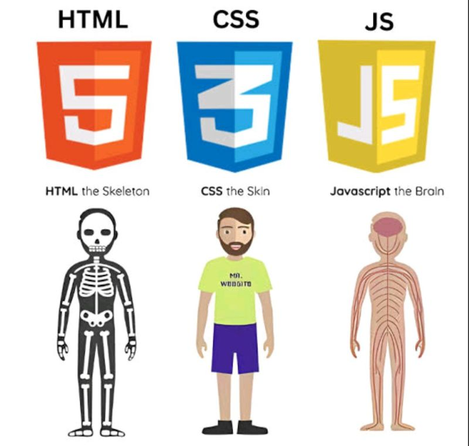

Web technologies refer to the tools, programming languages, frameworks and techniques used to create, develop and maintain websites and web applications. They make it possible for computers and other internet-enabled devices to communicate and exchange information over the internet.
Web technologies are responsible for how websites are structured, designed and made interactive. They allow users to access information, communicate with others, purchase products, watch videos and perform various activities online.
Examples of web technologies include HTML, CSS, JavaScript, PHP, Python and various web development frameworks.
The development of web technologies began in 1989 when British computer scientist Tim Berners-Lee proposed the World Wide Web while working at CERN. His invention introduced a system that allowed information to be connected through hyperlinks.
In 1991, HTML was introduced to structure web documents. As the internet developed, CSS emerged to improve webpage presentation, while JavaScript introduced interactivity and dynamic features.
Over the years, web technologies have continued to evolve from simple text-based webpages into sophisticated websites and applications that support communication, education, business and entertainment.
Today, modern web development involves various programming languages, frameworks and tools that make websites more interactive, accessible and responsive.
Read the Full History of the World Wide Web| Technology | Purpose | Example |
|---|---|---|
| HTML | Structures webpages | Headings, paragraphs |
| CSS | Styles webpages | Colours, font |
| Javascript | Adds interactivity | Animations, buttons |
Web technologies work together to create functional websites. HTML provides the structure, CSS controls the appearance, while JavaScript adds interactivity. When a user visits a website, the browser processes these technologies and displays the resulting webpage.

Web technologies are important in several areas:
Web technologies are essential to the development of modern websites and applications. HTML, CSS and JavaScript work together to provide structure, design and interactivity. As technology continues to advance, web development remains an important part of communication, education and business.